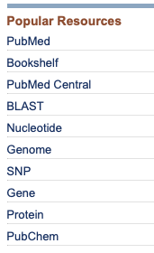
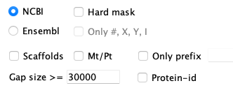

NCBI supplies FASTA formatted files for genome sequence and GFF3 formatted files for the annotation, where FASTA and GFF3 files are the input to SyMAP. Though they can be loaded directly into SyMAP, it is better to convert them.
|
|
Reasons to convert files
- The NCBI name for a chromosome or scaffold are long and crowd the interface.
Convert uses "ChrN" instead for chromosomes only (where the 'Chr' prefix can be removed on load); when scaffolds are included it uses the prefixes 'C' for chromosome and 's' for scaffold. - Only the 'protein-coding' genes are processed.
- Only the set of exons from the 1st mRNA are saved in the new GFF file.
- Gene attributes of output GFF file:
ID from the input gene attributes. Name from the input gene attributes (if it is not equal ID ).desc is the gene description ; if it does not exist, then it uses the 1st mRNAproduct . Symbols (e.g. %3B) are replaced with the correct character.rnaID is equal to the first mRNA ID. Following the ID is (n) , where n=the number of mRNAs for the gene.proteinID (optional) is equal the 1st CDS protein-id of the 1st mRNA.
- It has an option to produce a hard masked sequence.
Download
The following instruction were updated on 21-Jan-2026.- Go to NCBI.
As shown in Fig 1: Select the Genome link underPopular Resources on right-hand side. - As shown in Fig 2: Enter you genome name followed by
Search . - As shown in Fig 3:
- From the list of files, select the
Assembly you want. - Select
Download Package from theDownload drop-down. As shown, a window will popup with options. - Select the
RefSeq only with theGenome sequences (FASTA) andAnnotation features (GFF) files.
Note:xToSymap does NOT work with Genbank files, only RefSeq. - Select
Download . By default, a file called ncbi_dataset.zip will be downloaded.
- From the list of files, select the
|

Fig 1. | 
Fig 2. Search the NCBI site. |
{kind=link}

Fig 3. Select the
Convert files
| xToSymap NCBI Options | Scaffolds | Go to top |
The following instructions will use Brassica oleracea (wild cabbage) as an example.
- Go to the symap_5/data/seq directory.
- Make a subdirectory for your species
(see Project directory),
move ncbi_dataset.zip to it, and unzip it, e.g.
symap_5/data/seq> mkdir cabbN symap_5/data/seq> cd cabbN symap_5/data/seq/cabb> mv ~/Download/ncbi_dataset.zip . symap_5/data/seq/cabb> unzip ncbi_dataset.zip Archive: ncbi_dataset.zip inflating: README.md inflating: ncbi_dataset/data/data_summary.tsv inflating: ncbi_dataset/data/assembly_data_report.jsonl inflating: ncbi_dataset/data/GCF_000695525.1/GCF_000695525.1_BOL_genomic.fna inflating: ncbi_dataset/data/GCF_000695525.1/genomic.gff inflating: ncbi_dataset/data/dataset_catalog.json
- Start the xToSymap program.
- Select the appropriate xToSymap NCBI options (described below).
- Then select
Convert .
symap_5/data/seq/cabbN> ls -hlG total 264008 -rw-------@ 1 cari staff 1.6K Jul 23 2024 README.md drwxr-xr-x 4 cari staff 128B Jul 23 09:54 annotation/ drwxr-xr-x@ 3 cari staff 96B Jul 23 08:19 ncbi_dataset/ -rw-r--r--@ 1 cari staff 126M Jul 23 07:11 ncbi_dataset.zip drwxr-xr-x 3 cari staff 96B Jul 23 09:54 sequence/You may remove everything but annotation/ and sequence/. However, you may want to keep the original data/seq/cabb/ncbi_dataset.
xToSymap NCBI Options
|  | For the |
{kind=link}
| Option | Description | Default |
| NCBI genome sequences are typically soft-masked, where this option changes it to hard masked | Leave as soft-mask | |
| Scaffolds will be included in the resulting FASTA and GFF files. See section Scaffolds | No scaffolds | |
| Mt/Pt chromosomes will be included in the resulting FASTA and GFF fils. Only the first occurrence will be included. | No Mt/Pt | |
| Only sequences with the specified prefix will be processed. | None | |
| A new attribute called | Do not include | |
| Print extra information, see verbose log. | No extra information |
1You may include
2For situations needing
Rules: There are variations in the text associated with the FASTA ">" header lines. The rules used by this script are as follows:
- If
Only prefix is not blank, sequences are filtered out if theseqid does not start with the prefix. Then the following rules 2-4 are applied to the non-filtered sequences:
- Chromosomes: The name starts with 'NC_'.
- The exception is that Mt/Pt chromosomes will not be output unless
Mt/Pt is selected.
Mt/Pt: header line contains the word 'mitochondrion', 'mitochondrial', 'plastid' or 'chloroplast'. - Chromosomes are always output unless
Only prefix is set, and the prefix does not match. - >
seqid :
If the ">" line contains "chromosome N", where N={number, X, Y or roman numeral}, than this number is used prefixed by 'Chr' or 'C' (if scaffolds are included). For example,
>NC_029256.1 Oryza sativa Japonica Group cultivar Nipponbare chromosome 1
is replaced with:
>Chr1 NC_029256.1Otherwise, the word following 'chromosome' is used. For example,
>NC_027748.1 Brassica oleracea var. oleracea cultivar TO1000 chromosome C1, BOL,....
is replaced with:
>C1 NC_027748.1.
- The exception is that Mt/Pt chromosomes will not be output unless
- Scaffolds: The name starts with 'NW_' or 'NT_'.
- They will only be output if
Scaffolds is selected. - >
seqid : 'Scaf' followed by a consecutive number.
- They will only be output if
- Unknown: All other ">" entries are considered "unknown".
- They will only be output if
Only prefix matches. - >
seqid : 'Unk' followed by a consecutive number.
- They will only be output if
Scaffolds
By default, theThis will include all chromosomes (assigned prefix 'C') and scaffolds (assigned prefix 's') in the
Group prefix needs to be blank as there will be no common prefix.Minimum length should be set to only load the largest scaffolds.
Calculate the length using thexToSymap Lengths.
General
| Load files into SyMAP | Editing the script | What the ConvertNCBI script does | Go to top |
Load files into SyMAP
The above scenario puts the files in the default SyMAP directories.- When you start up ./symap, you will see your projects listed on the left of the panel (e.g demos).
- Check the projects
you want to load, which will cause them to be shown on the right of the
symap panel. - For the project you want to load, open the Project Parameters panel to enter the appropriate values.
- Then select
Load Project .
Editing the script
The NCBI FASTA files are not consistent in their header lines. Hence, the parsing could be incorrect. They may also not be consistent in the GFF files, but I have not found one. Anyway, if it is not parsing the FASTA file correctly, edit the program as described here.What the ConvertNCBI script does
The script scripts/ConvertNCBI.java executes the same code as the
FASTA: Reads the file ending in '.fna.gz' (or '.fna') and writes a new file called
- Sequences are output according to the option Rules.
- Gaps of >30,000 are written to the annotation/gap.gff file (this value can be changed
in the
xToSymap interface). - If
Hard mask is selected, all lower case bases are changed to 'N'.
GFF: Reads the file ending in 'gff.gz' (or .gff) and writes the file annotation/anno.gff. The gff3 format has 9 columns, where the first is the 'seqid', the third is the 'type' (e.g. feature 'gene'), the last column is a semicolon-delimited keyword=value attribute list. The input file is processed as follows:
- The type=gene with attribute gene-biotype=protein-coding are processed.
The gene line is written to the anno.gff file with the following changes:
- The first column 'seqid' is replace with the 'ChrN' value assigned when reading the '.fna' file.
- A subset of the attributes are written:
ID andName from the input gene attributes.desc is the genedescription ; if this does not exist, then it is the 1st mRNAproduct .rnaID is equal to the first mRNA ID.proteinID (optional) is equal the 1st CDSprotein-id for the 1st mRNA.
- The first type=mRNA line for a gene is written to the anno.gff file followed
by its type=exon, where they each are written with the new seqid and a subset of the
attributes. The mRNA ID is saved as an gene attribute (rnaID=) to indicate which exons were saved.
- If
Protein-id is selected, then the attributeprotein_id= from the first type=CDS of the 1st mRNA for the gene is extracted.
| Go to top |
Email Comments To: cas1@arizona.edu